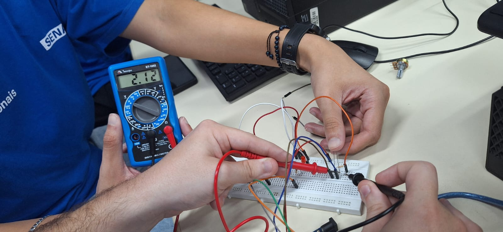

Imagem LDR no Arduino Uno Real:
Imagem Do código no IDE do Arduino UNO
Video do controle de iluminação funcionando
LDR Iluminado

LDR Escurecido
Explicação das duas imagens acima
O LDR é um fotoresistor, basicamente sua função é variar sua resistência
dependendo do quão intensa a luz que incide sobre ele é. Então nas
imagens acima está sendo mostrado essa função de sua resistência ficar
alterada dependendo da intensidade de luz incidida nele